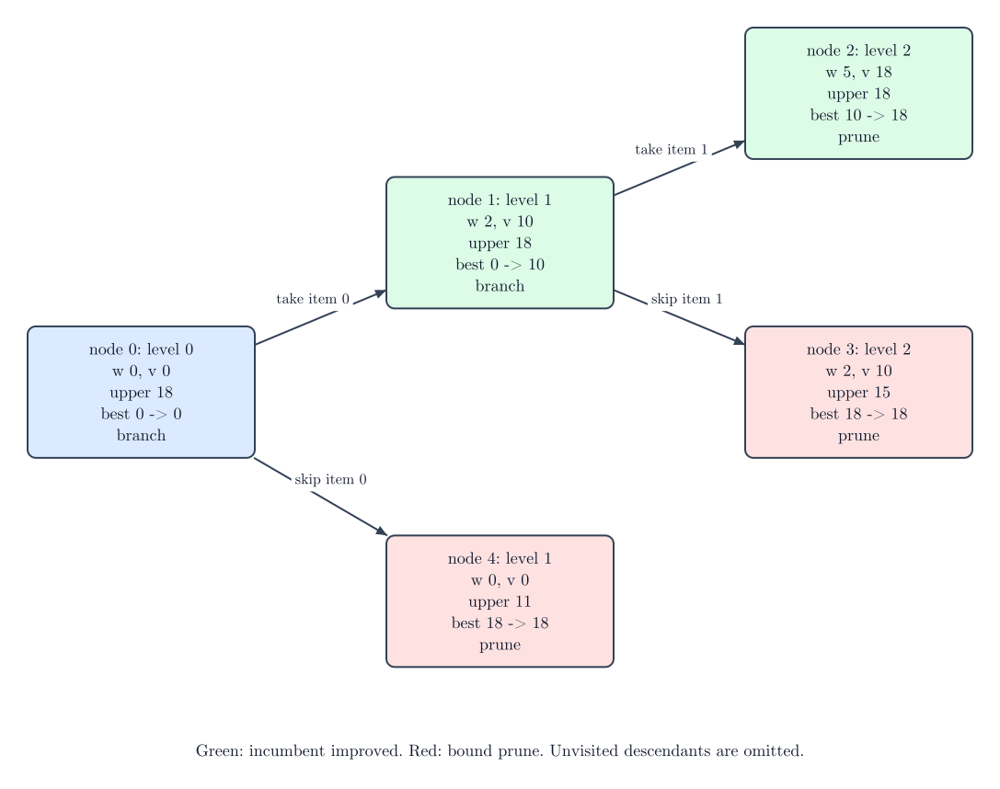
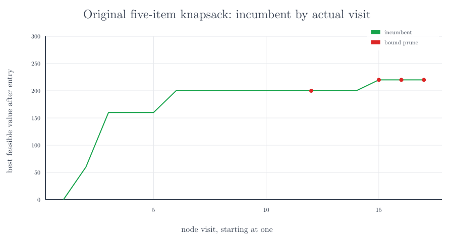
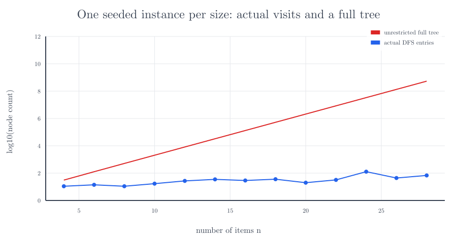

Branch and Bound: Exact Knapsack Search with Visible Pruning
Abstract
A 0/1 knapsack solver chooses whole items to maximise value within a weight budget. Branch and bound explores take/skip decisions while discarding branches whose optimistic completion cannot improve the best feasible selection already found. We inspect five actual visits on a small instance, preserve the original five-item problem and seeded scaling experiment, and add a family whose loose bound keeps many branches alive. The core computes exact density comparisons, rational relaxation bounds and their integer floors; the report reads actual incumbents, decisions and pruning records from that same solver.
Small example: five visits prove value eighteen
Take values {10,8,5}, weights {2,3,3} and capacity five. Their decreasing value densities already give the input order. Taking items zero and one yields weight five and value eighteen. A partial selection is feasible even before all remaining decisions are made, since every undecided item can be skipped; it can therefore improve the incumbent immediately.
The diagram contains every actual visited node. After finding eighteen, the solver prunes the branch that takes item zero but skips item one: its best remaining completion is only fifteen. Skipping item zero has fractional bound 8+5(2/3)=11 1/3, whose integer floor eleven also cannot improve eighteen. The node that already achieves eighteen is itself bound-pruned: remaining capacity is zero, so no better completion exists.
#include <dm/dm.hpp>
int main() {
std::filesystem::create_directories("build");
const auto trace=dm::algorithms::knapsack_branch_and_bound_trace({10,8,5},{2,3,3},5);
const std::vector<dm::graphics::DiagramPoint> position{{0,0},{6,2.5},{12,5},{12,0},{6,-3.5}};
if (trace.nodes.size()!=position.size()) return 1;
dm::graphics::Diagram diagram(65,1100);
for (std::size_t i=0;i<trace.nodes.size();++i) {
const auto& node=trace.nodes[i];dm::graphics::DiagramNodeStyle style;style.width=3.8;style.height=2.2;
const auto state=node.state==dm::algorithms::KnapsackNodeState::branch?"branch":
node.state==dm::algorithms::KnapsackNodeState::pruned?"prune":"leaf";
style.fill={219,234,254};
if (node.state==dm::algorithms::KnapsackNodeState::pruned) style.fill={254,226,226};
if (node.incumbent_after>node.incumbent_before) style.fill={220,252,231};
diagram.node(std::format("n{}",i),position[i],std::format("node {}: level {}\nw {}, v {}\nupper {}\nbest {} -> {}\n{}",
i,node.level,node.weight,node.value,node.bound.integer_upper,node.incumbent_before,node.incumbent_after,state),style);
}
for (std::size_t i=1;i<trace.nodes.size();++i) {
const auto& node=trace.nodes[i];
diagram.edge(std::format("n{}",node.parent),std::format("n{}",i),
std::format("{} item {}",node.took_item?"take":"skip",node.item_index));
}
diagram.text({6,-6},"Green: incumbent improved. Red: bound prune. Unvisited descendants are omitted.")
.save_svg("build/knapsack_small_tree.svg");
const auto& bound=trace.nodes.back().bound;
std::print("| optimum | original-index choices | visited nodes | bound prunes | leaves |\n"
"| ---: | :--- | ---: | ---: | ---: |\n| {} | {} | {} | {} | {} |\n",
trace.result.value,trace.result.chosen,trace.result.nodes_explored,trace.bound_prunes,trace.leaves);
std::print("\nLast branch relaxation: {} + {}/{}; integer upper bound {}.\n",
bound.whole_value,bound.fractional_numerator,bound.fractional_denominator,bound.integer_upper);
}| optimum | original-index choices | visited nodes | bound prunes | leaves |
|---|---|---|---|---|
| 18 | [1, 1, 0] | 5 | 3 | 0 |
Last branch relaxation: 8 + 10/3; integer upper bound 11.

Why the bound preserves the optimum
For item values vi, weights wi and capacity C, solve
The empty selection is allowed. With nonnegative weights, items of nonpositive value never improve the optimum and are omitted from the active search. Free positive-value items come first. Other active items are sorted by value/weight, using exact widened cross-products and original-index tie order.
At a feasible node of value V and remaining capacity R, relax undecided choices to fractions between zero and one. Greedily fill in density order: include whole items while they fit, then use a fraction of the next item. If W is the value after the whole additions, and the final item has value v and positive weight w, the bound is B=W+vR/w. Every integral completion is also a relaxed completion, so its value is at most B. Integer profits permit the stronger safe upper bound U=floor(B).
The core stores W, vR and w exactly and computes U with integer division. No floating-point value controls density order or pruning. A rounded LP value is available for display. At each visit, the current feasible partial selection first improves the incumbent if strictly better. If U is no greater than that incumbent, there is no improving descendant, so the node is pruned. Otherwise try taking the next item if it fits, then skipping it. Equal optima retain the first solution found under this deterministic order.
Original five-item instance
Retain values {60,100,120,40,70}, weights {10,20,30,15,25} and capacity fifty. Items one and two form the optimum: value 100+120=220 and weight 20+30=50. The selected bits stay in original input order even though the search processes items by density. The program measures node visits and pruning states from the exact integer-bound kernel.
#include <dm/dm.hpp>
int main() {
std::filesystem::create_directories("build");
const std::vector<int> values{60,100,120,40,70},weights{10,20,30,15,25};
const auto trace=dm::algorithms::knapsack_branch_and_bound_trace(values,weights,50);
const auto plain=dm::algorithms::knapsack_branch_and_bound(values,weights,50);
if (trace.result.value!=plain.value || trace.result.chosen!=plain.chosen || trace.result.nodes_explored!=plain.nodes_explored) return 1;
std::print("| item | value | weight | selected |\n| ---: | ---: | ---: | ---: |\n");
for (std::size_t i=0;i<values.size();++i) std::print("| {} | {} | {} | {} |\n",i,values[i],weights[i],trace.result.chosen[i]);
std::print("\nDensity order: {}. Optimum: {}. Visited nodes: {}; bound prunes: {}; infeasible takes: {}.\n",
trace.item_order,trace.result.value,trace.result.nodes_explored,trace.bound_prunes,trace.infeasible_takes);
std::vector<double> visit,best,prune_visit,prune_best;
for (std::size_t i=0;i<trace.nodes.size();++i) {
const auto& node=trace.nodes[i];visit.push_back(i+1);best.push_back(node.incumbent_after);
if (node.state==dm::algorithms::KnapsackNodeState::pruned) {
prune_visit.push_back(i+1);prune_best.push_back(node.incumbent_after);
}
}
dm::graphics::RPlot::create().lines(visit,best,"incumbent",dm::RGB{22,163,74},2)
.points(prune_visit,prune_best,"bound prune",dm::RGB{220,38,38},4)
.title("Original five-item knapsack: incumbent by actual visit")
.x_label("node visit, starting at one").y_label("best feasible value after entry")
.y_limits(0,300).size(900,480).save_svg("build/knapsack_incumbent.svg");
}| item | value | weight | selected |
|---|---|---|---|
| 0 | 60 | 10 | 0 |
| 1 | 100 | 20 | 1 |
| 2 | 120 | 30 | 1 |
| 3 | 40 | 15 | 0 |
| 4 | 70 | 25 | 0 |
Density order: [0, 1, 2, 4, 3]. Optimum: 220. Visited nodes: 17; bound prunes: 4; infeasible takes: 4.

Original seeded experiment, with the full-tree count corrected
The native fixture generator preserves the original experiment: one MT19937 stream seeded with 777, sizes 4,6,...,28, values uniform on 1..100, weights uniform on 1..30 and capacity 5n. For each size, all values are drawn before all weights. These are separate instances, rather than nested item prefixes. A bounded-distribution implementation may map engine outputs differently on another C++ standard library; the seed alone is not a cross-library data format.
An unrestricted binary tree deciding all n items has 2n leaves and exactly 2(n+1)-1 nodes including its root. The old reference omitted the minus one. The actual solver count includes all visited leaves and bound-pruned entries, but it also omits infeasible take branches. Thus the comparison measures savings from both bounds and feasibility checks against an unrestricted tree; it does not isolate the bound's contribution or measure elapsed time.
#include <dm/dm.hpp>
int main() {
std::filesystem::create_directories("build");
const auto inputs=dm::algorithms::knapsack_random_instances({4,6,8,10,12,14,16,18,20,22,24,26,28},5,777);
std::vector<double> sizes,measured,full;
std::print("| n | capacity | optimum | visited nodes | unrestricted full-tree nodes | visited / full |\n"
"| ---: | ---: | ---: | ---: | ---: | ---: |\n");
for (const auto& input:inputs) {
const auto n=input.values.size();const auto result=dm::algorithms::knapsack_branch_and_bound(input.values,input.weights,input.capacity);
const auto reference=(std::uint64_t{1}<<(n+1))-1;
sizes.push_back(n);measured.push_back(std::log10(double(result.nodes_explored)));full.push_back(std::log10(double(reference)));
std::print("| {} | {} | {} | {} | {} | {:.8f} |\n",n,input.capacity,result.value,result.nodes_explored,reference,
double(result.nodes_explored)/reference);
}
dm::graphics::RPlot::create().lines(sizes,full,"unrestricted full tree",dm::RGB{220,38,38},2)
.lines(sizes,measured,"actual DFS entries",dm::RGB{37,99,235},2)
.points(sizes,measured,"",dm::RGB{37,99,235},4)
.title("One seeded instance per size: actual visits and a full tree")
.x_label("number of items n").y_label("log10(node count)")
.y_limits(0,12).size(900,480).save_svg("build/branch_and_bound.svg");
}| n | capacity | optimum | visited nodes | unrestricted full-tree nodes | visited / full |
|---|---|---|---|---|---|
| 4 | 20 | 65 | 11 | 31 | 0.35483871 |
| 6 | 30 | 169 | 14 | 127 | 0.11023622 |
| 8 | 40 | 151 | 11 | 511 | 0.02152642 |
| 10 | 50 | 323 | 17 | 2047 | 0.00830484 |
| 12 | 60 | 428 | 27 | 8191 | 0.00329630 |
| 14 | 70 | 432 | 35 | 32767 | 0.00106815 |
| 16 | 80 | 517 | 29 | 131071 | 0.00022125 |
| 18 | 90 | 536 | 36 | 524287 | 0.00006866 |
| 20 | 100 | 767 | 20 | 2097151 | 0.00000954 |
| 22 | 110 | 624 | 32 | 8388607 | 0.00000381 |
| 24 | 120 | 658 | 128 | 33554431 | 0.00000381 |
| 26 | 130 | 868 | 44 | 134217727 | 0.00000033 |
| 28 | 140 | 794 | 68 | 536870911 | 0.00000013 |

Limits: a parity gap keeps branches alive
A good result on the seeded inputs is not a guarantee for arbitrary instances. For even n, give every item value two and weight two, and set capacity n-1. The integral optimum is n-2 because feasible values are even. The root's fractional bound is n-1, and flooring it still gives n-1. It cannot prove the extra parity restriction, so many branches remain promising after the true optimum has already been found. The following table shows the resulting growth.
#include <dm/dm.hpp>
int main() {
std::print("| n | capacity | optimum | theoretical root upper | actual visits | unrestricted tree |\n"
"| ---: | ---: | ---: | ---: | ---: | ---: |\n");
for (int n:{4,6,8,10,12,14,16,18}) {
const auto result=dm::algorithms::knapsack_branch_and_bound(std::vector<int>(n,2),std::vector<int>(n,2),n-1);
if (result.value!=n-2) return 1;
std::print("| {} | {} | {} | {} | {} | {} |\n",n,n-1,result.value,n-1,result.nodes_explored,(std::uint64_t{1}<<(n+1))-1);
}
struct Example {std::string name;std::vector<int> values,weights;int capacity;};
const int maximum=std::numeric_limits<int>::max();
const std::vector<Example> examples{{"empty",{},{},0},{"optional negative profit",{1,-100},{1,1},2},
{"free positive item",{7,0,-9,4},{0,0,0,2},0},{"zero capacity",{5},{1},0},
{"large weight boundary",{1,1},{maximum,maximum},maximum}};
std::print("\n| control | optimum | original-index choices | visited nodes |\n| :--- | ---: | :--- | ---: |\n");
for (const auto& example:examples) {
const auto result=dm::algorithms::knapsack_branch_and_bound(example.values,example.weights,example.capacity);
std::print("| {} | {} | {} | {} |\n",example.name,result.value,result.chosen,result.nodes_explored);
}
}| n | capacity | optimum | theoretical root upper | actual visits | unrestricted tree |
|---|---|---|---|---|---|
| 4 | 3 | 2 | 3 | 13 | 31 |
| 6 | 5 | 4 | 5 | 49 | 127 |
| 8 | 7 | 6 | 7 | 181 | 511 |
| 10 | 9 | 8 | 9 | 671 | 2047 |
| 12 | 11 | 10 | 11 | 2507 | 8191 |
| 14 | 13 | 12 | 13 | 9437 | 32767 |
| 16 | 15 | 14 | 15 | 35749 | 131071 |
| 18 | 17 | 16 | 17 | 136135 | 524287 |
| control | optimum | original-index choices | visited nodes |
|---|---|---|---|
| empty | 0 | [] | 0 |
| optional negative profit | 1 | [1, 0] | 3 |
| free positive item | 7 | [1, 0, 0, 0] | 3 |
| zero capacity | 0 | [0] | 1 |
| large weight boundary | 1 | [1, 0] | 3 |
The solver requires equal-length input vectors, nonnegative weights and nonnegative capacity. It rejects invalid inputs before indexing. Profits can be signed, with nonpositive items left unchosen. A feasible value above the legacy int result range proves that the optimum is unrepresentable, so the call raises overflow_error; exact bound sums and visit counts are checked too. Weight feasibility uses remaining capacity, avoiding overflow in tentative sums.
With k active positive-profit items and N visits, preprocessing costs O(n+k log k), and bound scans and incumbent copies can cost O(kN). N remains exponential in the worst case. The ordinary solver uses O(n+k) storage; its explicit stack avoids C++ recursion-depth limits. Recording adds O(N+k) storage for actual nodes, parent links and density order. Inputs are unchanged and results own their data. Generated instances are appropriate here; no observational dataset is needed to establish the search invariants.
References
- A. H. Land and A. G. Doig (1960), An Automatic Method of Solving Discrete Programming Problems, Econometrica 28(3), 497–520. [Original paper](https://doi.org/10.2307/1910129).
- P. J. Kolesar (1967), A Branch and Bound Algorithm for the Knapsack Problem, Management Science 13(9), 723–735. [Original paper](https://doi.org/10.1287/mnsc.13.9.723).
The core uses an exact integer fractional bound with iterative take-first DFS; this report does not reproduce every strategy or stopping rule in those papers.